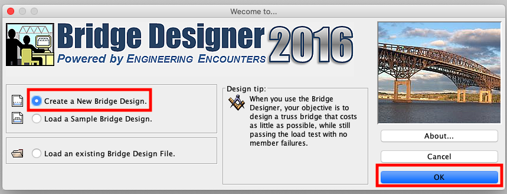

橋樑設計
3/8 2022
類別：科學實驗
為了解結構力學，我們可以試著搭一座橋，透過橋樑結構的設計，透過力學的分析，讓橋能穩固並能有較大的載重量，但自己用腦袋空想或畫設計圖，甚至自己去畫橋樑結構上的力圖來分析橋樑承載重量，都是很困難的工作。
幸好，有一套橋樑設計軟體可以幫我們在設計橋樑時，能輕易畫出橋樑結構，並利用模擬動畫分析此橋的耐重，大大減輕我們的工作量。
此軟體的名稱為The Bridge Designer(2016)，此單元要分享如何下載此軟體，並作簡單的操作教學。
Step1、先至The Bridge Designer的網站下載軟體
依自己電腦的作業系統下載安裝軟體，如果是windows作業系統，請選擇For windows computers- Setbdv16j.exe，如下圖所示
下載後，點擊安裝軟體，並依指示流程完成安裝
Step2、建立一個新的設計
0.點擊桌面軟體的圖示開啟軟體，並選擇Create a New Bridege Designer，再按右下角OK鍵開始設計。
1.Read the Design Requirement，簡易說明設計要求，可直接按右下角Next至下一步。

2.Enter Local Contest Information，選擇No，並按右下角Next至下一步。
3.Select the Deck Elevation and Suppport Configuration:
(1)Deck Elevation(橋的高度)選擇: 0 meters。
(2)Support Configuration(支撐類別)選擇:Standard abutments、No Pier(One Span)、No Cable Anchorages。
(3)按右下角Next至下一步。
補充:此節只先以基本的操作教學，未來可增加橋的高度以增加設計難度，或更改支撐類別來設計不同種類的橋樑。
4.Select the Deck Material and Truck Loarding:
(1)Deck Material(橋的材料)選擇:Medium-Strength Concrete(中等強度混凝土)。
(2)Loading(負載車重)選擇:Standard 225 KN Truck。
(3)按右下角Next至下一步。
5.Select a Standard Truss Template(選擇桁架橋的模板):
(1)Select a Template選擇: none
(2)按右下角Next至下一步。
補充:選none可從無到有設計出橋樑，未來也可選擇下面不同的初始模板開始進行橋的設計。
6.Fill in the Title Block:
(1)於Designed By:下面的空格，填上你的班級座號姓名，例如「10410曾柏諺」。
(2)按右下角Next至下一步。
7.Design the Steel Truss:
按右下角Finish開始橋樑的設計。
Step3、設計界面說明
1.界面下方是橋樑設計區。
2.我們要用Tools上的工具繪製橋樑，Tools裡有四個工具，分別為連接點、連接線、選擇物件以及橡皮擦。
要利用新增連接點和連接線，在橋樑設計區繪製橋樑的的結構。
也可選擇物件，調整連接點和連接線的位置，或是用橡皮擦移除點或線。
3.繪製好橋樑後，可點繫上方藍色按鈕的橋樑測試。若繪製過程所有連接點都有以連接線連接上，且結構都為三角形，則會進入模擬動畫，可看卡車是否能順利通過你設計的橋。
4.在動畫執行時，若要再重新調整橋的結構，只要按上方橋樑設計的按鈕，即會回到設計的界面。
5.上方會顯示此橋建造的成本，可試著以最低的成本讓卡車能通過橋樑。
課堂作業:
請將3.Select the Deck Elevation and Suppport Configuration:中的Deck Elevation(橋的高度)，調整為: 24 meters，其它的參數也可依你的設計任意選擇，搭出一座橋，並在模擬動畫時，讓卡車能順利通過此橋。
如何繳交作業
1.完成橋樑設計後，點擊上方的File，並點擊下方的Print。
2.列印服務中的名稱，選擇Adobe PDF。
3.最後按右下方的列印，即會輸出一份此設計成果的PDF檔，將之命名為你的「班級座號姓名」，上傳至Classroom，即完成作業